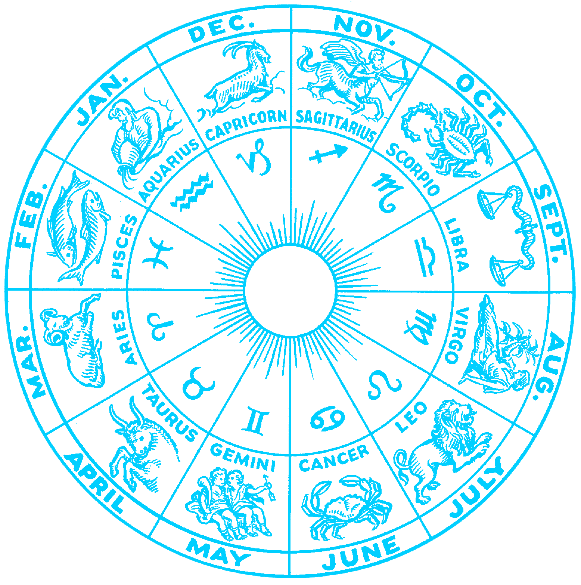

Ascendentes
Ascendentes
Dias e seus respequitivos signos
| Dia | Signo |
|---|---|
| 21/03 - 19/04 | Áries |
| 21/04 - 20/05 | Touro |
| 21/05 - 20/06 | Gêmios |
| 21/06 - 20/07 | Câncer |
| 21/07 - 22/08 | Leão |
| 23/08 - 22/09 | Virgem |
| 23/09 - 22/10 | Libra |
| 23/10 - 21/11 | Escorpião |
| 22/11 - 21/12 | Ságitario |
| 22/12 - 20/01 | Capricórnia |
| 21/01 - 19/02 | Aquário |
| 20/02 - 20/03 | Peixez |
Aries ✧ Touro ✧ Gemeos ✧ Cancer ✧ Virgem ✧ Libra
Escorpiao ✧ Sagitario ✧ Capricornio ✧ Aquario ✧ Peixes
 Signos do Zodíaco
Signos do Zodíaco
O que se conhece como signo é na verdade o signo solar, responsáveis pelo do Sol em relação à Terra no
momento do nascimento de cada pessoa. O signo solar sinaliza características da sua personalidade,
mas você tem outros signos marcantes, como o ascendente ou a lua.
